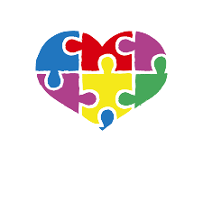

“Apoyar y acompañar a las familias con Asperger y Autismo de Alto Funcionamiento en el camino hacia la inclusión social”.
Apoyar – Educar – Incluir.“Lo normal es que seamos diferentes”
El síndrome de Asperger es un trastorno del espectro autista que suele ser menos grave. Las personas que padecen este trastorno pueden tener un comportamiento social inusual y un interés profundo en algunos temas específicos. La terapia conductual y de formación en la comunicación permite a los pacientes con trastornos del aprendizaje socializar mejor.

Necesita un diagnóstico médico Las personas que padecen este trastorno pueden tener un comportamiento social inusual y un interés profundo en algunos temas específicos.
Las personas pueden sufrir: Comportamiento: agresión, aislamiento social, comportamiento compulsivo, impulsividad, moverse nerviosamente, movimientos repetitivos o repetición persistente de palabras o acciones Muscular: coordinación deficiente, incapacidad para combinar movimientos musculares o tic Estado de ánimo: ansiedad, enfado o temor También comunes: depresión, discapacidad de aprendizaje, interés intenso en una cantidad limitada de cosas, pesadillas o sensibilidad al sonido
Grupo de apoyo
Foro para el asesoramiento de personas y el intercambio de experiencias entre pacientes con una afección o meta similar, como la depresión o la pérdida de peso.Biorretroalimentación
Controlar los latidos del corazón, las ondas cerebrales, la respiración y la presión arterial del cuerpo mediante la monitorización con sensores.Terapia cognitivo-conductual
Terapia verbal que se enfoca en la modificación de las respuestas emocionales, los pensamientos y los comportamientos negativos asociados con los trastornos psicológicos.Manejo de la ira
Practicar concientización, desarrollar estrategias de afrontamiento y evitar factores desencadenantes para minimizar los arrebatos emocionales destructivos.Psicoeducación
Educación sobre la salud mental que permite asistir, validar y fortalecer a los pacientes.Terapia familiar
Asesoramiento psicológico que ayuda a las familias a resolver conflictos y comunicarse de manera más eficaz.